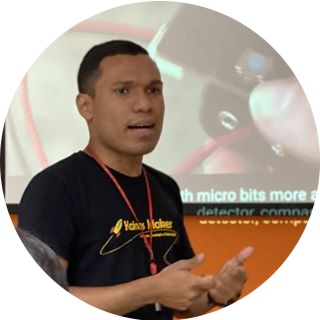
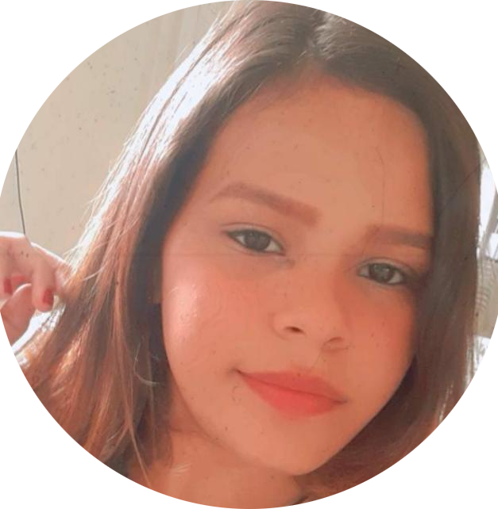

Somos uma empresa de tecnologia educacional voltada para ensino Maker, acessível a todos os públicos.
Acreditamos que a robótica, a programação e inovação, são para todos.

Jonathas Souza
Diretor educacional
"A Kainos Maker é uma empresa de soluções educacionais focadas em projetos de tecnologias e inovações para a imersão no mundo maker, o faça você mesmo (do it yourself), a aprendizagem criativa e criação de novas tecnologias que é a base da "revolução 4.0", afim de preparar e equipar a nossa geração para a nova era digital e tecnológica, que já começou! Abrindo o espaço para todas as idades, todas classes sociais todos os gêneros, dando a oportunidade para o surgimento de "novos criadores" (kainos makers), protagonistas desse tempo."
Felipe Menezes
Diretor de Inovação e Projetos
"A Kainos Maker é uma empresa de soluções educacionais focadas em projetos de tecnologias e inovações para a imersão no mundo maker, o faça você mesmo (do it yourself), a aprendizagem criativa e criação de novas tecnologias que é a base da "revolução 4.0", afim de preparar e equipar a nossa geração para a nova era digital e tecnológica, que já começou! Abrindo o espaço para todas as idades, todas classes sociais todos os gêneros, dando a oportunidade para
o surgimento de "novos criadores" (kainos makers), protagonistas desse tempo."
Janyfer Pinheiro
Gestora Financeira
"A Kainos Maker é uma empresa em desenvolvimento constante, cujo os pilares são: inclusão, capacitação e ampliação de horizontes, através das revolução e educação 4.0 preparando estudantes e colaboradores para o presente e futuro."
Gabriela Silva
Consultora Administrativa e Monitoria
" Kainos é uma empresa promissora do ramo de educação, com o objetivo de aplicar o Learning By Doing ("aprender fazendo"), transformando a sala de aula em um ambiente colaborativo e dinâmico, desenvolvendo alunos capazes de obter aprendizagem autônoma. Com projetos tecnológicos e inclusivos, para o acesso de todos, visando o mundo digital cada vez mais inserido no ensino."
Evellyn Oliveira
Assistente administrativa e monitoria
" Kainos Maker é uma empresa que busca abrir portas para os menos privilegiados, com o preço mais acessível do mercado, ela atua na área da educação 4.0, com inovações tecnológicas, que podem ser utilizadas como ferramentas de aprendizagem para todas as idades. Quer ter uma educação inovadora, criativa e divertida? Vem pra kainos maker!."
Lauhren Sena
Monitoria, secretaria e consultora de Marketing
" É uma Empresa empreendedora, que visa formar pessoas na área da tecnologia com ideias criativas de Mantes brilhantes, onde a tecnologia ea robótica estão sendo cada vez mais implementadas na sociedade pois os mesmos estão movimentando o mercado de trabalho, trazendo soluções capazes de elevar a produtividade e estimulando os negócios. A Kainos vem nos proporciona essa grande oportunidade de juntar a tecnologia ea robótica. faça parte desse grande projeto !!!."

Gheycielle Moura
Secretaria e Monitoria
" Kainos Maker e uma empresa de ensino para todas as idades, é uma empresa de tecnologia e inovação que estar dando oportunidade de conhecimento na área Robótica, através da Kainos Maker vocês vão adquirir o Melhor conhecimento em Microbit e Arduino , vocês se aperfeiçoarão nos nossos ensinos 😉🚀."
Darlison Hendrix
Design e monitoria
" A Kainos Maker uma empresa genuínamente manauara, cuja a proposta é ensina os alunos de forma criativa. Com projetos de tecnologia e inovação, com ênfase ao mundo maker e educação 4.0 e conforme for se adaptando aos mais novos tipos de tecnologia que o mercado apresenta."